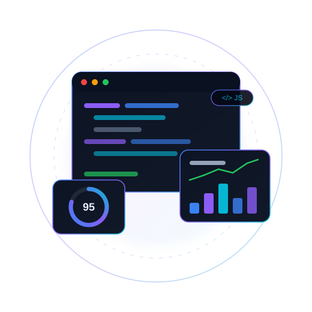
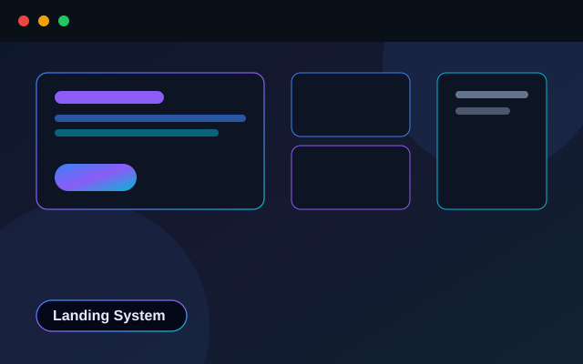
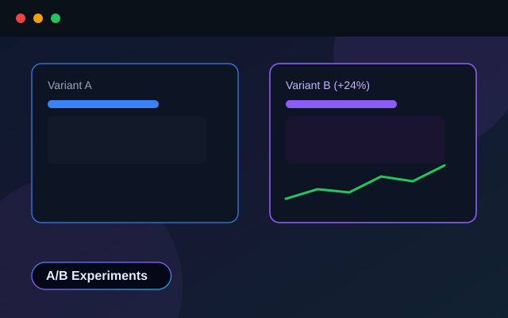
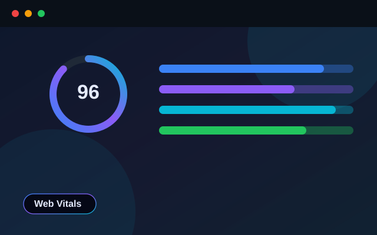
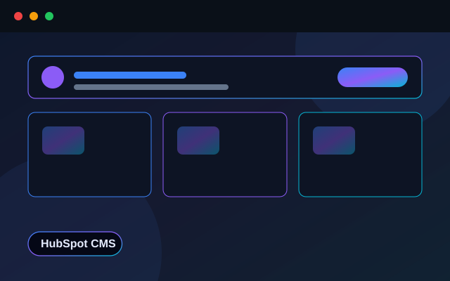
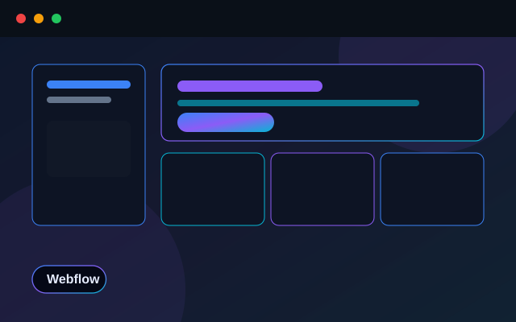

Frontend
- HTML5
- CSS3
- SCSS
- JavaScript
- TypeScript
- React (Basic)
- AJAX
- jQuery
Performance-focused web developer turning ambitious ideas into fast, accessible and high-converting experiences. I blend clean engineering with rigorous experimentation to help enterprise teams ship pages that load quickly and convert measurably better.

I'm a Frontend Engineer with 5+ years of experience building performant, conversion-focused web experiences for enterprise clients. My work lives at the intersection of clean engineering and data-driven design — I write maintainable JavaScript and TypeScript, and I obsess over Core Web Vitals, accessibility and pixel-accurate execution.
I lead Conversion Rate Optimization builds, shipping 30+ landing pages and running weekly experiments across VWO, Optimizely and Mutiny. I develop inside HubSpot and Webflow, mentor teammates through code reviews, and use modern AI-assisted workflows (Cursor AI + MCP) to move faster without cutting quality.
A pragmatic toolkit spanning frontend engineering, experimentation platforms and modern CMS.
Frontend Engineering & CRO
Enterprise Web Applications
Representative builds from my CRO and frontend engineering practice.

A reusable, component-driven landing-page system for enterprise SaaS clients — pixel-perfect, accessible and tuned for Core Web Vitals.

An experimentation workflow that manages hypotheses, variant code and results across VWO and Optimizely, with a shared component library.

A monitoring dashboard visualizing Lighthouse scores, LCP/CLS trends and bundle sizes to keep pages fast release after release.

Custom HubSpot themes and modules powering campaign landing pages, email templates and dynamic personalization for marketing teams.

A scalable Webflow design system with reusable symbols, interactions and a CMS-driven content model for rapid campaign launches.
Clean, accessible, component-driven UIs built with modern JavaScript and TypeScript.
High-converting, pixel-perfect landing pages designed to load fast and convert.
Core Web Vitals tuning, lazy loading and bundle trimming for measurable speed gains.
End-to-end experiment builds and analysis across VWO, Optimizely and Mutiny.
Scalable Webflow systems with reusable symbols, CMS and rich interactions.
Custom themes, modules and personalization for marketing-driven websites.
Turning hypotheses into shippable, measurable experiments that grow revenue.
Have a project or role in mind? I'd love to hear about it.